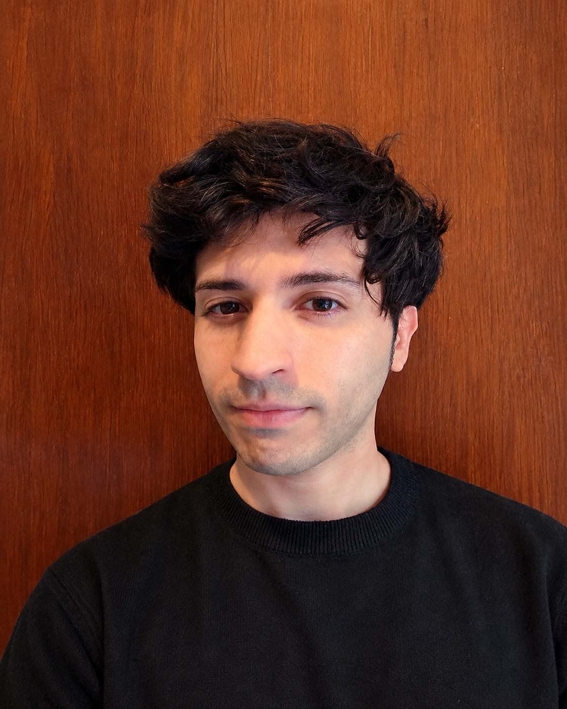

Design, creativity, and drive.
I am Lucas Blas, a graphic designer with 10+ years of experience working across digital advertising, branding, social media, print design, and illustration for local and international brands and clients. Throughout my career, I've worked across vastly different environments: from print production and freelance projects to high-volume, performance-driven digital campaigns. This variety shaped a workflow that combines visual judgment, adaptability, and an approach focused both on precise execution and the strategic goal behind every piece. I am especially interested in exploring new ways to create and streamline processes, finding the right balance between creativity and results. In recent years, I integrated generative AI tools into my workflow to experiment, develop concepts, and expand design possibilities while preserving creative direction behind every decision. Currently, I continue to broaden my skills in design, technology, and visual communication, seeking projects that challenge me to keep evolving professionally.
Tools & Skills
- Adobe Photoshop
- Adobe Illustrator
- Adobe Premiere Pro
- Figma
- Photo retouching & compositing
- Video editing & motion graphics
- Web & email design
- HTML & CSS fundamentals
- Generative AI & LLMs — ChatGPT, Claude, Gemini
- AI Visual Generation — Nano Banana, Midjourney, ChatGPT, Grok
Work Ethics & Mindset
- Art direction & creative judgment
- Project management
- Effective communication
- Creative problem solving
- Leadership & teamwork
- Adaptability
- Organization & detail orientation
- Continuous learning
If you've made it this far, thank you for your time. You can contact me by clicking here, which will take you directly to the contact section.